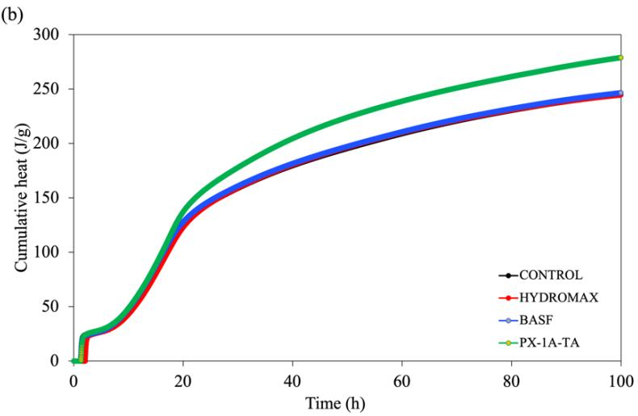
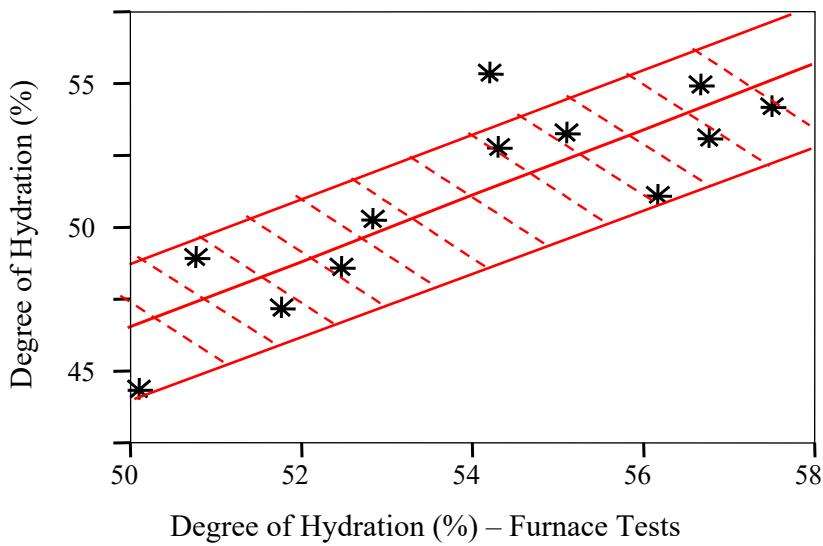

Degree of Hydration
The degree of hydration quantifies the extent to which cement particles in a concrete mix have chemically reacted with water, typically expressed as a fraction or percentage of the total possible reaction. This metric is fundamentally linked to the exothermic nature of the process, allowing it to be estimated by measuring either the heat evolution released during curing or the quantity of non-evaporable water bound within the hardened paste [1] [2] [5] [9]. The progression and ultimate extent of this reaction are governed primarily by the availability of moisture, ambient temperature, curing duration, and the specific composition and fineness of the cementitious materials [4] [5] [9]. As hydration proceeds, the resulting products fill capillary pores within the paste matrix, thereby directly controlling the development of compressive strength, tensile capacity, and long-term durability properties such as freeze-thaw resistance [4] [5] [12].
Sources (14)
Key findings
- Applying liquid-membrane curing compounds significantly increased the degree of hydration in both air-cured and oven-cured specimens compared to untreated controls [5].
- High-shear mixing energy consistently produced a higher degree of hydration than conventional low-shear mixing, as evidenced by fewer unhydrated cement particles [8].
- Incorporating supplementary cementitious materials such as fly ash and slag reduced the overall degree of hydration compared to plain cement mixes [8].
- Internal curing using saturated lightweight fine aggregate markedly enhanced the degree of hydration by extending pozzolanic activity during early ages [4].
- Adding superabsorbent polymers increased the degree of hydration by releasing internal-curing water that promoted additional hydrate formation [3].
- Internal curing with high-absorption materials drove the cement and supplementary cementitious materials toward a near-complete degree of hydration [10].
- The degree of hydration in slag-cement concrete developed rapidly, making early-age strength less dependent on prolonged or high-temperature curing regimes [14].
- Isothermal calorimetry reliably measured the degree of hydration and enabled accurate prediction of set time and early-age strength, whereas semi-adiabatic testing yielded inaccurate values due to heat capacity omissions [1].
Hydration Measurement and Enhancement Mechanisms
The degree of hydration quantifies the extent to which cement particles have chemically reacted with water, typically expressed as a fraction or percentage of the total possible reaction [1] [5] [9]. This metric is fundamentally linked to the exothermic nature of hydration, allowing it to be estimated by measuring heat evolution or quantifying non-evaporable water bound within the hardened paste [2] [5] [9]. The progression and ultimate extent of this reaction are governed by moisture availability, curing temperature, and cement composition, directly controlling the development of strength and durability in concrete [4] [12].
The following figure illustrates how varying the water-to-cement ratio influences this heat evolution process.
 Effect of w/c ratio on the heat evolution (RILEM 42-CEA 1981) [9]
Effect of w/c ratio on the heat evolution (RILEM 42-CEA 1981) [9]
The figure plots cumulative heat evolution against equivalent age for cement pastes with varying water-to-cement ratios. The curves demonstrate that a higher water-to-cement ratio allows for greater total heat release over time, indicating a more complete degree of hydration compared to lower ratios.
Research problem — There is currently no simple, rapid, or standardized method for accurately monitoring the degree of hydration in field concrete, which hinders reliable quality control and performance prediction [1] [9]. Achieving a sufficient degree of hydration is challenging due to rapid moisture loss, self-desiccation in low water-to-cement mixes, and binder agglomeration, all of which compromise early-age strength, durability, and crack resistance [4] [6] [7] [8] [12]. Enhancement mechanisms such as internal curing with superabsorbent polymers or specialized mixing techniques are needed to mitigate these hydration deficiencies and ensure long-term pavement performance [3] [8] [10] [11].
State of the art — The current assessment of the degree of hydration relies primarily on calorimetric techniques, with isothermal calorimetry serving as the laboratory gold standard for detailed early-age heat evolution data and semi-adiabatic devices becoming the preferred field method due to their cost-effectiveness and rapid feedback capabilities [1] [9]. To enhance hydration in low water-to-cement ratio concrete, internal curing using saturated lightweight fine aggregate is the prevailing practical method in the United States, while super-absorbent polymers are increasingly adopted as a targeted admixture to supply sacrificial moisture and improve hydration levels under moderate humidity conditions [3] [4] [11]. Optimization of the degree of hydration is further influenced by mixing energy, where high-shear mixers consistently achieve higher hydration levels than conventional low-shear equipment, and curing effectiveness is significantly boosted by liquid-membrane-forming compounds that raise near-surface hydration percentages compared to untreated controls [5] [8].
The impact of mixing energy on hydration levels is illustrated in the figure below.
 Comparison of degree of hydration for the high shear mixer and Hobart mixer [8]
Comparison of degree of hydration for the high shear mixer and Hobart mixer [8]
The figure plots the degree of cement hydration as a percentage against mixing speed and time settings. It demonstrates that high shear mixing consistently achieved higher hydration levels than the Hobart mixer, by an average of about 6 percent. The data indicates that increased mixing energy increases the rate of cement paste hydration.
Findings from the reports
- Internal curing using superabsorbent polymers (SAPs) raised the degree of cement hydration by supplying additional water for continued reaction [3] [11].
- Semi-adiabatic calorimetry produced degree-of-hydration values that differed markedly from those obtained via isothermal testing due to differences in heat estimation and equipment characteristics [1] [2].
- Applying liquid-membrane curing compounds consistently increased the degree of cement hydration compared with untreated concrete under both mild and hot conditions [5].
- High-shear mixing energy yielded a higher degree of hydration than conventional low-shear mixing, while incorporating supplementary cementitious materials reduced it [8].
- Incorporating saturated lightweight fine aggregate as an internal curing reservoir markedly enhanced the degree of hydration and extended beneficial reactions for approximately one month [4].
- Internal curing drove cement and supplementary cementitious materials toward full reaction, resulting in a degree of hydration approaching unity [10].
- Degree-of-hydration metrics derived from isothermal calorimetry correlated with mortar set times and early-age strength, enabling performance forecasting [1].
- Isothermal calorimetry captured a distinct second heat-evolution peak associated with fly-ash hydration, which semi-adiabatic devices failed to detect [2].
- Quantitative models defined the degree of hydration as a function of time, temperature, water-to-cement ratio, and heat generation rate to support quality-control metrics [9].
Novelty & rigor — Research has introduced a unified framework that links curing compound performance to measurable hydration metrics and transport properties, enabling practitioners to assess pavement curing effectiveness through the statistically significant relationship between sorptivity and hydration level [5]. A distinctive methodological contribution involves validating an inexpensive furnace-based hydration test against thermogravimetric analysis, providing a practical field-testing baseline that correlates strongly with sophisticated laboratory techniques [5]. The application of high-shear or two-stage premixed slurry mixing has been shown to produce a consistent increase in the degree of hydration compared with conventional low-shear methods, offering a novel mechanism for enhancing early cement reactions [8]. Internal curing strategies utilizing super-absorbent polymers have been developed to directly target and raise the maximum degree of hydration by linking polymer dosage calculations explicitly to expected hydration levels rather than generic rules [3]. Field-scale implementations using pre-conditioned lightweight fine aggregate as an internal water reservoir have demonstrated sustained higher hydration levels over extended periods, mitigating early-age cracking through real-time monitoring of temperature and moisture gradients [4]. Rapid, low-cost calorimetric protocols have been established to translate heat-evolution data into quantitative degree-of-hydration metrics within twenty-four hours, enabling the prediction of early-age concrete behavior without relying on lengthy standard testing procedures [1]. A portable calorimetry system has been integrated with pavement-performance models to provide a repeatable, field-ready protocol for monitoring degree of hydration and forecasting thermal cracking risk using site-specific heat-evolution data [2].
The following figure illustrates how air curing conditions influence the degree of hydration when a curing compound is applied.
 Effect of Curing Compound on Degree of Hydration—Air Curing [5]
Effect of Curing Compound on Degree of Hydration—Air Curing [5]
The figure displays the degree of hydration for concrete specimens cured under different conditions, including air curing and wet curing. Specimens treated with a single-layer application of curing compound (Case 1) exhibit higher hydration levels compared to the reference specimen cured in air without treatment. The application of curing compounds significantly improves the degree of hydration under mild weather conditions, as evidenced by the higher bars for treated specimens compared to the air-cured reference.
Reported values
| Parameter | Value | Context | Source |
|---|---|---|---|
| data duration for semi-adiabatic testing | 24-hour | heat evolution data used for DOH computation compared to seven-day reference | [1] |
| prediction reliability | 60% | matching stress-to-strength ratio predictions of the seven-day DOH data set | [1] |
| generated heat | 130 BTU/lb | after 150 hours of hydration | [2] |
| water reducer/fly ash dosage variation | 50% | higher or lower than the designed dosage | [2] |
| slump loss duration | 30 minutes | SAPs absorbing water | [3] |
| coefficient of determination | 0.90 | linear relationship between the results from the two test methods | [5] |
| degree of cement hydration | 41.5% | reference specimen cured in the same curing condition without curing compound (Ref. 1) | [5] |
| degree of cement hydration | 43.5% | corresponding specimen without curing compound (Ref. 3) | [5] |
| degree of cement hydration | 47.0%–52.5% | single-layer application of curing compound (Case 2) | [5] |
| degree of cement hydration | 47.5% | single-layer application of curing compound (Case 1) | [5] |
| degree of hydration | 12 percent | addition of 35% FA | [8] |
| degree of hydration | 25 percent | addition of 35% GGBFS | [8] |
| degree of hydration | 30 percent | addition of 35% GGBFS and 15% FA | [8] |
| degree of hydration | 6 percent | high shear mixing vs Hobart mixer (average) | [8] |
| degree of hydration | 16% | sample cured at 50% relative humidity | [11] |
The following figure illustrates how varying curing temperatures influence the heat evolution profile for Type I cement.
 Effect of curing temperature on heat of hydration (Type I cement) [1]
Effect of curing temperature on heat of hydration (Type I cement) [1]
This demonstrates that cement hydration is accelerated at early ages under high environmental temperatures but is decelerated later on.
6 more distinct values omitted here; the full span-verified set is in the quantities sidecar.
Across the reviewed reports, hydration measurement relies primarily on calorimetric analysis of heat evolution to derive quantitative degree-of-hydration metrics that correlate with early-age strength and set times. While isothermal calorimetry provides a complete hydration profile including secondary peaks from supplementary cementitious materials, semi-adiabatic testing yields systematically different parameter values and requires specific reliability adjustments to match longer-term predictions. Enhancement mechanisms consistently demonstrate that internal curing via superabsorbent polymers or lightweight aggregates significantly increases the degree of hydration by maintaining moisture availability for continued reaction. External curing compounds and high-shear mixing energy also serve as effective mechanisms to elevate hydration levels, with compound efficacy depending on application layering and mixing energy reducing unhydrated cement particles. [1] [2] [3] [4] [5] [8]
The following figure illustrates the heat of hydration of cement pastes, specifically showing the hydration heat release rate and cumulative heat.

Cumulative heat evolution of cement pastes over time. [3]The figure displays the cumulative heat released by four different cement paste formulations as a function of curing duration, with one sample exhibiting significantly higher total heat release than the others.
Implications — Practitioners should adopt isothermal calorimetry with full-duration measurements as the standard for routine design to accurately forecast early-age strength and thermal-cracking risk, while using calibrated short-term tests only when rapid quality-control decisions are necessary [1]. Mix designs incorporating supplementary cementitious materials must increase mixing energy or adjust curing regimes to offset the resulting reduction in hydration levels and maintain target performance [8]. Specifications for internal curing systems should account for trade-offs, such as optimizing polymer dosages to balance early strength gains against potential reductions in later compressive strength and permeability [3].
The following figure illustrates how different cement types influence this thermal behavior.
 Effect of cement type on heat of hydration [1]
Effect of cement type on heat of hydration [1]
The figure displays the rate of heat generation over time for three different cement types, labeled I, III, and ISM. Type III cement exhibits a significantly higher peak in the rate of heat evolution compared to Type I cement. The ISM blended cement curve demonstrates a delayed and lower initial reaction compared to the other types.
Limitations — The applicability of regression coefficients linking sorptivity, moisture content, and hydration is restricted to the specific mortar materials and mix proportions tested [5]. Residual moisture in undried specimens introduces uncertainty into the inferred relationship between sorptivity and degree of hydration [5]. The two methods used to quantify hydration are not perfectly interchangeable, with one method exhibiting a small systematic bias compared to the other [5].
The figure below illustrates the relationship between results obtained from furnace and thermogravimetric analysis (TGA) tests.

Relationship Between Results from Furnace and TGA Tests [5]The figure displays a scatter plot comparing the degree of hydration measured by furnace tests against values obtained via thermogravimetric analysis (TGA). Data points are distributed along a positive linear trend, indicating that both methods yield consistent results for quantifying cement hydration.
Evidence: 12 reports (9 primary)
Impact of Hydration on Durability Performance
Research problem — Standard testing protocols often evaluate concrete before supplementary cementitious materials have achieved a sufficient degree of hydration, leading to misleading durability results that do not reflect actual field performance [14]. Premature strength measurements based on standard curing ages can misrepresent the true capacity of mixes with slow-developing pozzolanic reactions, potentially resulting in overly conservative or unsafe pavement designs [13].
State of the art — Current durability assessment protocols for concrete exposed to deicing salts are transitioning from standard scaling tests toward modified procedures that account for the specific hydration characteristics of supplementary cementitious materials [14]. Research indicates that the degree of hydration significantly influences durability metrics, as continued hydration refines pore structure and reduces charge passage over time, necessitating test protocols that allow sufficient curing periods to reflect field performance [14].
Findings from the reports
- The study demonstrated that the degree of hydration in concrete rises markedly as it ages, resulting in a substantial drop in chloride-permeability charge values and higher early compressive strengths [14].
- Accelerated VDOT curing produced only a modest additional benefit because much of the slag had already hydrated before the temperature was raised, limiting further reaction due to the small temperature differential [14].
- The research revealed that for slag-cement concretes, the degree of hydration develops quickly, making early-age strength and durability less dependent on prolonged or high-temperature curing [14].
Implications — Specifications and testing protocols should account for realistic curing periods or use alternative methods that reflect the actual degree of hydration achieved in field concrete [14].
Limitations — The reported durability benefits are limited by the fact that most slag hydration occurs early, meaning modest accelerated curing provides little additional reaction [14]. These findings may not apply to mixes with slower-reacting binders or those subjected to larger temperature differentials than those tested [14].
Evidence: 2 reports (1 primary)
Related concepts
In this hierarchy
- Parent: Cement Hydration
- Sibling: Heat of Hydration
- Sibling: Heat Signature
- Sibling: Initial Set
- Sibling: Thermogravimetric Analysis
Related by shared evidence
- Cement Hydration — shares 12 reports
- Concrete Materials & Mixtures — shares 12 reports
- CP Tech Center Reports — shares 12 reports
- Supplementary Cementitious Materials — shares 12 reports
- Concrete Curing — shares 11 reports
- Cementitious Materials & Chemistry — shares 10 reports
- Fly Ash — shares 10 reports
- Chemical Admixtures for Concrete — shares 8 reports
Similar topics
- Cement Hydration
- Concrete Curing
- Sorptivity
- Hydration, Heat & Maturity
- Internal Curing
- Heat of Hydration
- Degree of Saturation
- Lightweight Aggregate
References
- K. Wang, Z. Ge, J. Grove, J. M. Ruiz, R. Rasmussen, and T. Ferragut, "Simple and Rapid Test for Monitoring the Heat Evolution of Concrete Mixtures, Phase 2," Center for Transportation Research and Education, Ames, IA, 2007. [Online]. Available: https://www.intrans.iastate.edu/wp-content/uploads/2018/03/calorimeter.pdf
- K. Wang, J. M. Ruiz, J. Hu, Z. Ge, Q. Xu, J. Grove, and R. Rasmussen, "Simple and Rapid Test for Monitoring the Heat Evolution ..., Phase III," National Concrete Pavement Technology Center, Ames, IA, 2008. [Online]. Available: https://www.intrans.iastate.edu/wp-content/uploads/2018/03/CalorimeterReportPhaseIII.pdf
- B. Zhou, P. Taylor, and K. Wang, "Superabsorbent Polymer in Concrete to Improve Durability," National Concrete Pavement Technology Center, Iowa State University, Ames, IA, Rep. TR-793, 2025. [Online]. Available: https://www.intrans.iastate.edu/wp-content/uploads/2025/04/superabsorbent_polymer_in_concrete_w_cvr.pdf
- A. Daghighi, P. Taylor, H. Ceylan, and Y. Zhang, "Impacts of Internally Cured Concrete Paving on Contraction Joint Spacing Phase II," National Concrete Pavement Technology Center, Iowa State University, Ames, IA, Rep. TR-746, 2021. [Online]. Available: https://www.cptechcenter.org/wp-content/uploads/2021/05/IC_concrete_paving_impacts_phase_II_field_impl_w_cvr.pdf
- K. Wang, J. K. Cable, and G. Zhi, "Improved Pavement Curing Materials and Techniques: Part 1 (Phases I and II)," Center for Transportation Research and Education (CTRE), Iowa State University, Ames, IA, Rep. TR-451, 2002. [Online]. Available: https://www.cptechcenter.org/wp-content/uploads/2018/03/curing.pdf
- K. Wang, G. Lomboy, and R. Steffes, "Investigation into Freezing-Thawing Durability of Low-Permeability Concrete with and without Air Entraining Agent," National Concrete Pavement Technology Center, Ames, IA, 2009. [Online]. Available: https://www.intrans.iastate.edu/wp-content/uploads/2018/03/low-permeability-concrete.pdf
- H. Ceylan, S. Yang, K. Gopalakrishnan, S. Kim, P. Taylor, and A. Alhasan, "Impact of Curling and Warping on Concrete Pavement," Institute for Transportation, Ames, IA, Rep. TR-668, 2016. [Online]. Available: https://www.intrans.iastate.edu/wp-content/uploads/2018/03/curling_and_warping_impact_on_concrete_pvmt_w_cvr.pdf
- T. D. Rupnow, V. R. Schaefer, K. Wang, and B. L. Hermanson, "Improving PCC Mix Consistency and Production Rate through Two-Stage Mixing," Center for Transportation Research and Education, Ames, IA, Rep. TR-505, 2007. [Online]. Available: https://www.intrans.iastate.edu/wp-content/uploads/2018/03/two-stage-mix-1.pdf
- K. Wang, Z. Ge, J. Grove, J. M. Ruiz, and R. Rasmussen, "Developing a Simple and Rapid Test for Monitoring the Heat Evolution of Concrete Mixtures (Phase 3)," CTRE, Iowa State University, Ames, IA, Rep. FHWA Project 17 (Phase I), 2006. [Online]. Available: https://www.intrans.iastate.edu/wp-content/uploads/2018/03/CalorimeterReportPhaseIII.pdf
- W. J. Weiss and L. Montanari, "Guide Specification for Internally Curing Concrete," National Concrete Pavement Technology Center, Ames, IA, Rep. TPF-5(286), 2017. [Online]. Available: https://www.intrans.iastate.edu/wp-content/uploads/2018/09/IC_guide_spec_w_cvr.pdf
- T. Cackler, J. Alleman, J. Kevern, and J. Sikkema, "Technology Demonstrations Project: Environmental Impact Benefits with "TX Active" Concrete Pavement (Missouri DOT Two-Lift Demonstration)," National Concrete Pavement Technology Center, Ames, IA, 2012. [Online]. Available: https://www.cptechcenter.org/research/completed/technology-demonstrations-project-environmental-impact-benefits-with-tx-active-concrete-pavement-in-missouri-dot-two-lift-highway-construction-demonstration/
- V. R. Schaefer and J. T. Kevern, "An Integrated Study of Pervious Concrete Mixture Design for Wearing Course Applications," National Concrete Pavement Technology Center, Ames, IA, 2011. [Online]. Available: https://www.intrans.iastate.edu/wp-content/uploads/2018/03/pervious_overlay_report_w_cvr.pdf
- K. Wang, J. Hu, and Z. Ge, "Task 4: Testing Iowa PCC Mixtures for the AASHTO Mechanistic-Empirical Pavement Design Procedure," Center for Transportation Research and Education, Ames, IA, Rep. CTRE 06-270, 2008. [Online]. Available: https://www.intrans.iastate.edu/research/completed/testing-iowa-portland-cement-concrete-mixtures-for-the-mechanistic-empirical-pavement-design-guide/
- R. D. Hooton and D. Vassilev, "Deicer Scaling Resistance of Concrete Mixtures Containing Slag Cement, Phase 2," National Concrete Pavement Technology Center, Ames, IA, Rep. TPF-5(100), 2012. [Online]. Available: https://www.intrans.iastate.edu/research/completed/deicer-scaling-resistance-of-concrete-pavements-bridge-decks-and-other-structures-containing-slag-cement-phase-2-evaluation-of-different-laboratory-scaling-test-methods/
Feedback on this page